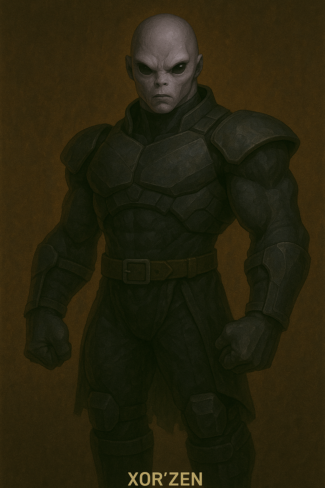

Xor’Zen

Name & Alias: Xor’Zen – The Iron Silence
Age / Race / Role: Unknown / Vorak’Kai Titan / Stealth Enforcer, Physical Combat Specialist
Appearance: Towering gray-skinned titan with minimalist armor and glowing eyes. Never speaks. Radiates intimidating calm.
Affinities & Energy Types: None (Refuses Energy Use)
Threat Tier: S-Rank
Core Stats (0–10):
• Power: 10
• Speed: 6
• Technique: 9
• Intelligence: 8
• Defense: 10
• Aura Control: 0
Signature Abilities:
• Voidstep Break
• Silencing Hammer Fist
• Boneguard Counterhold
• Iron Clasp Slam
• Titan’s Grasp Lockdown
Personality Summary: Stoic, disciplined, and philosophical. Follows the Vorak’Kai code: 'The Body is the Blade. Energy leaves traces. Fists do not.'
Faction or Allegiances: The Vigilant Watchers